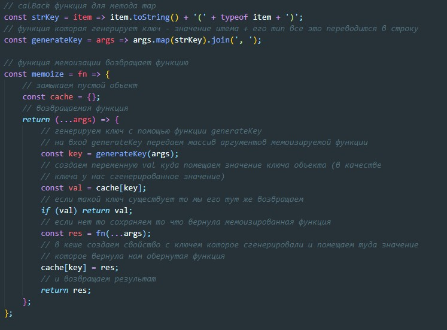

Мемоизация - это оборачивание функции дл ятого что бы сохранять значение которое она возвращает и в случае если она уже возвращала такой результат, то при последующем вызове не проводить вычисления а сразу вернуть закешированный результат
пример функции memo
